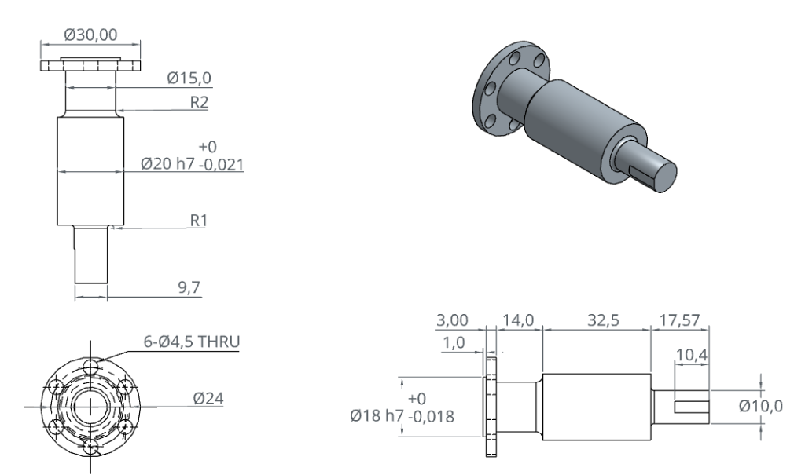
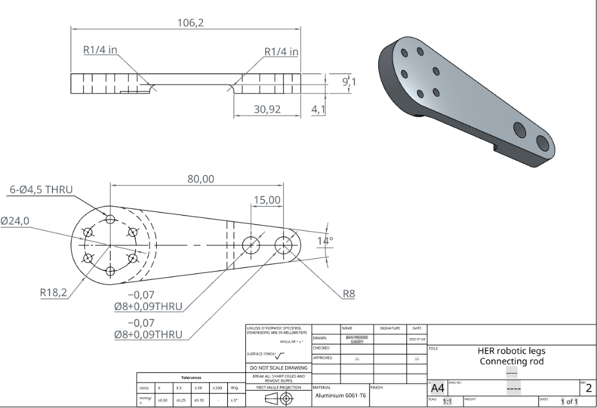

Enseignement d'exploration Seconde Sciences de l'Ingénieur (SI & CIT) — Conception volumique 3D & Lecture de plans
Pour générer une pièce de révolution, on ne dessine JAMAIS la pièce complète dans l'esquisse !
On trace UNIQUEMENT le demi-profil fermé situé d'un seul côté par rapport à l'axe de construction (au-dessus de l'axe). Pour coter un diamètre, cliquez sur le segment, puis sur l'axe, et positionnez la cote sous l'axe (Onshape applique automatiquement le symbole diamètre ⌀).
Dans votre document Onshape (nommé TP_CAO_2SI_NOM_PRENOM), réalisez les deux tutoriels officiels en suivant les étapes pas-à-pas pour maîtriser les fondations de l'esquisse et de la révolution :
Maîtrisez les relations géométriques avancées, les lignes de construction, les arcs tangents et la symétrie.
Q).T).M).Apprenez à générer des solides cylindriques et toriques en faisant tourner un profil fermé autour d'un axe.
Créez un nouvel onglet Part Studio pour chaque pièce (clic sur le + en bas à gauche d'Onshape > Create Part Studio). Lisez attentivement les esquisses et plans cotés ci-dessous, appliquez la méthodologie et vérifiez votre volume à l'aide de l'outil Mass Properties (icône balance en bas à droite).
Aluminium 606110 081 mm³ (± 25 mm³)~27,2 g
⌀10, ⌀34, ⌀50).Acier doux / POM Delrin23 692 mm³ (± 35 mm³)23,69 cm³
Q).⌀12 (alésage), ⌀24 (moyeu), ⌀40 (corps).Bronze / Acier / Laiton19 348 mm³ (± 35 mm³)19,35 cm³

Acier standard / Inox16 196 mm³ (± 40 mm³)~127,1 g (densité 7,85 g/cm³)
Liaison cinématique remarquable : Observez bien la tête circulaire de cette bielle ! Elle comporte exactement les mêmes 6 perçages ⌀4,5 mm répartis sur le diamètre ⌀24,0 mm que la bride de la pièce 4 précédente. Ces deux pièces constituent un sous-ensemble mécanique réel articulé du robot bipède "HER robotic legs".

18,2 + 80 + 8 = 106,2 mm.6,35 mm) sur les transitions intérieures de l'usinage.Aluminium 6061-T619 750 mm³ (± 500 mm³)~53,3 g (densité 2,70 g/cm³)
| Fait | Critères d'évaluation (Seconde Sciences de l'Ingénieur) | Validation | Barème |
|---|---|---|---|
| Activité 1 validée : Réalisation de l'exercice Intermediate Sketching (tangences, lignes noires). | Acquis / Non acquis | 2 pts | |
| Activité 2 validée : Réalisation de l'exercice Revolve (axe de révolution, cotation au diamètre). | Acquis / Non acquis | 2 pts | |
| Pièce 1 (Manivelle) : Esquisse totalement contrainte, volume conforme (10 081 mm³ ±25). | Acquis / Non acquis | 3 pts | |
| Pièce 2 (Poulie) : Demi-profil fermé sur 1 seul côté de l'axe, volume conforme (23 692 mm³ ±35). | Acquis / Non acquis | 3 pts | |
| Pièce 3 (Galet) : Révolution avec gorge circulaire R3, volume conforme (19 348 mm³ ±35). | Acquis / Non acquis | 3 pts | |
| Pièce 4 (Arbre à collerette) : Révolution multi-paliers, 6 perçages ⌀4,5 en répétition circulaire, méplat (16 196 mm³ ±40). | Approfondissement | 4 pts | |
| Pièce 5 (Bielle robotique HER) : Profil à 14°, 6 trous ⌀4,5 sur ⌀24, 2 alésages ⌀8, usinage d'allègement de 4,1 mm (19 750 mm³ ±500). | Défi d'application | 3 pts | |
| Total général : | / 20 pts | ||